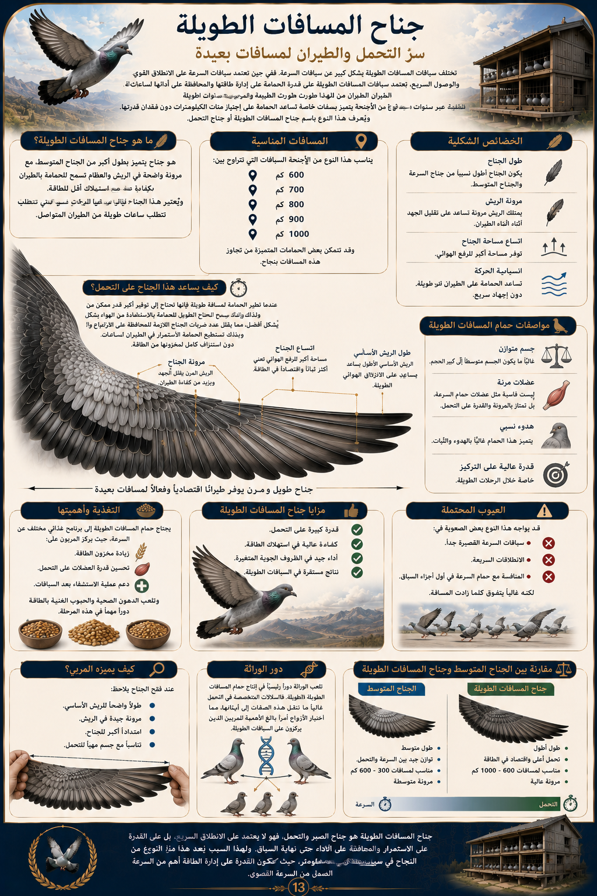

يعد الحمام الزاجل من أقدم الطيور التي رافقت الإنسان عبر التاريخ، وقد اشتهر بقدرته الفريدة على العودة إلى موطنه مهما ابتعدت المسافات. وقد استخدم في نقل الرسائل عبر الحضارات المختلفة، ثم تطورت هواية تربيته لتصبح رياضة عالمية تقام لها البطولات والسباقات الدولية.

سوف يأخذك هذا الكتاب خطوة بخطوة لتتعلم اختيار الحمام، والتغذية، والتدريب، والرعاية الصحية، وأساليب السباقات الحديثة.